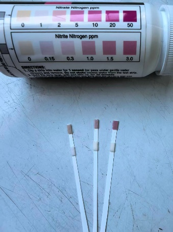
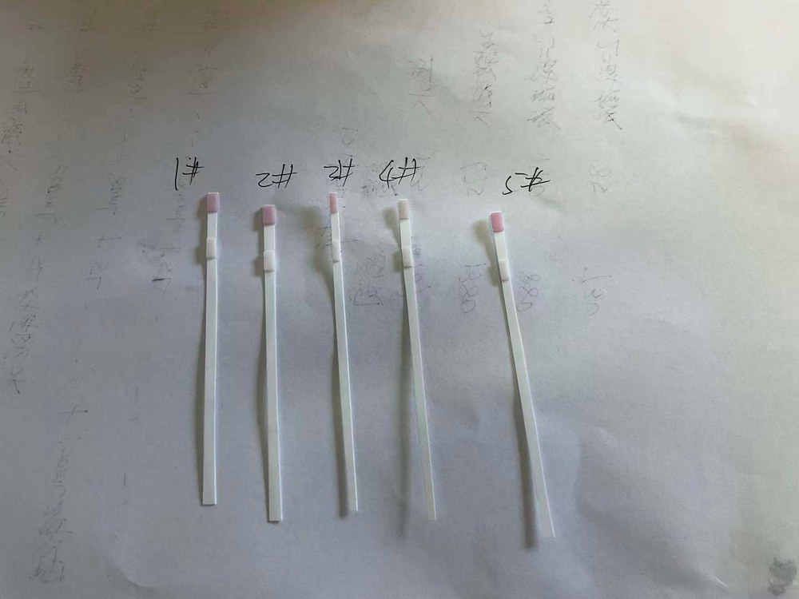
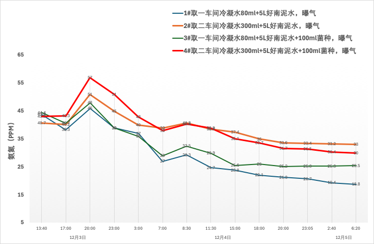
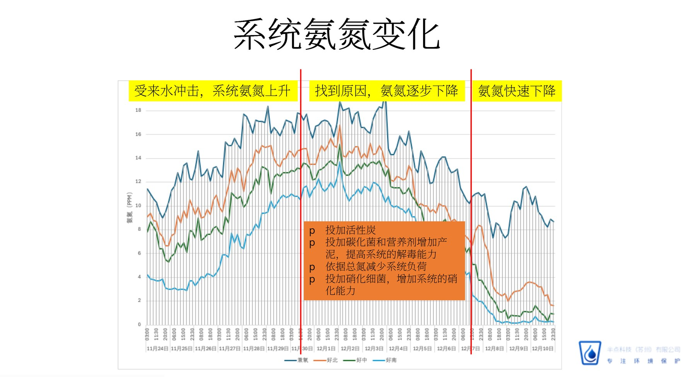

11月底，某化学公司污水系统受来水冲击，出水氨氮从1PPM缓慢上升至10PPM以上。排查发现：来水中有机氮（主要为乙酰胺）浓度高达2000-3300PPM，水解后持续加重系统氨氮负荷，且部分来水毒性相对较高，抑制硝化反应。半点科技团队协助客户采取"解毒＋补菌＋控负荷"组合措施：投加活性炭、投加碳化菌与营养剂增加污泥量提高解毒能力、依据总氮控制进水负荷、投加硝化细菌增强硝化能力。经过系列调整，系统硝酸盐浓度回升、生物相明显好转、原生动物活性增加，出水氨氮重新回到1PPM附近。
11月29日-30日现场排查：出水氨氮持续上升，现场生物相一般，硝化反应较弱，氨氮去除能力不足；硝酸盐浓度偏低，提示硝化系统功能受损。
对来水进行排查分析：来水中有机氮（主要是乙酰胺）含量偏高，水解后转化为氨氮，持续加重生化系统的氨氮去除负荷；同时部分车间来水毒性相对较高，对硝化菌群活性造成抑制。



水质变化 VS 调整措施
受来水冲击，系统氨氮持续上升。确认原因后，采取分步调整策略：
- 第一步：投加活性炭，吸附来水中的毒性物质；
- 第二步：投加碳化菌和营养剂，增加产泥量，提高系统的解毒能力；
- 第三步：依据总氮数据削减系统进水负荷；
- 第四步：投加硝化细菌，增强系统的硝化能力，氨氮快速下降。

来水乙酰胺分析
乙酰胺是系统总氮和氨氮负荷的主要来源。经检测，每1000克乙酰胺中含氮约240克。12月初来水乙酰胺浓度持续处于高位：
| 日期 | 乙酰胺（PPM） | 总氮（PPM） |
|---|---|---|
| 12月3日 | 2800 | 672 |
| 12月4日 | 3106 | 745 |
| 12月5日 | 2046 | 492 |
| 12月6日至今 | 2700-3300 | 648-792 |
下一步建议
- 在保证出水稳定的前提下谨慎提高负荷，逐步处理库存水；
- 持续监测来水总氮和毒性指标；
- 将总氮纳入日常管控指标，控制每天进水总氮总量；
- 定期投加菌种，维持系统硝化能力。